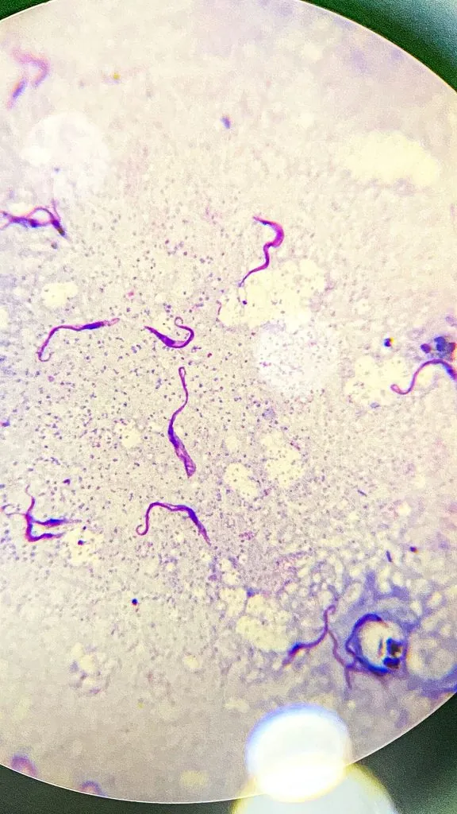

其他无脊椎动物 · 动物界
克氏锥虫 Trypanosoma cruzi

由锥蝽粪便传播的鞭毛虫，经皮肤破损或黏膜侵入人体引起恰加斯病，可致心肌病，流行于拉丁美洲。
- 分类
- 门眼虫门纲动质体纲目锥虫目科锥虫科属锥虫属
- 栖息环境
- 人及多种哺乳动物的血液与心肌、消化道平滑肌细胞内
- 地理分布
- 拉丁美洲，自墨西哥至阿根廷的广大地区
- 保护级别
- 无保护问题；为恰加斯病病原，防控靠改善住房与灭锥蝽
物种志
克氏锥虫是一种寄生于血液和多种组织细胞内的鞭毛虫，虫体细长弯曲，长约十五至二十微米，有一根鞭毛和波动膜。在血液中它呈锥鞭毛体形态，进入细胞后转变为无鞭毛的利什曼型，在细胞内繁殖，撑破细胞后再释放出来感染新的细胞。它尤其偏好心肌和消化道的平滑肌，造成慢性炎症和纤维化。
它分布于拉丁美洲，从墨西哥到阿根廷的广大地区，传播媒介是锥蝽，俗称亲吻虫。感染途径不是叮咬本身，而是锥蝽吸血时排出的粪便：人在睡梦中抓挠叮咬处，把含虫的粪便揉进伤口，或用手接触眼睛、口腔黏膜而感染；输血、器官移植和母婴垂直传播也是重要途径。急性期症状轻微，可有发热和眼周水肿，随后进入长达数十年的慢性期，约三成患者出现心肌病、心脏扩大或巨结肠、巨食管。防护的关键是改造土坯房和茅草屋顶、使用蚊帐、喷洒杀虫剂消灭锥蝽，输血前进行筛查，孕妇应接受检测。目前尚无疫苗，治疗以抗虫药物为主，慢性期以对症处理为主。
形态与习性
- 虫体细长弯曲，长十五至二十微米
- 细胞内型在细胞内转为无鞭毛型并繁殖
- 感染途径锥蝽粪便经伤口或黏膜侵入
- 其他途径输血、器官移植、母婴垂直传播
- 慢性损害心肌病、心脏扩大、巨结肠与巨食管
- 防护改造住房、挂蚊帐、喷洒杀虫剂灭锥蝽
趣味知识
- 它不靠叮咬传播，而是藏在锥蝽的粪便里，从抓破的皮肤钻进去。
- 感染后可能几十年没有症状，直到心脏慢慢被拖垮。
- 把土墙茅顶换成砖房，是切断传播最实在的办法。